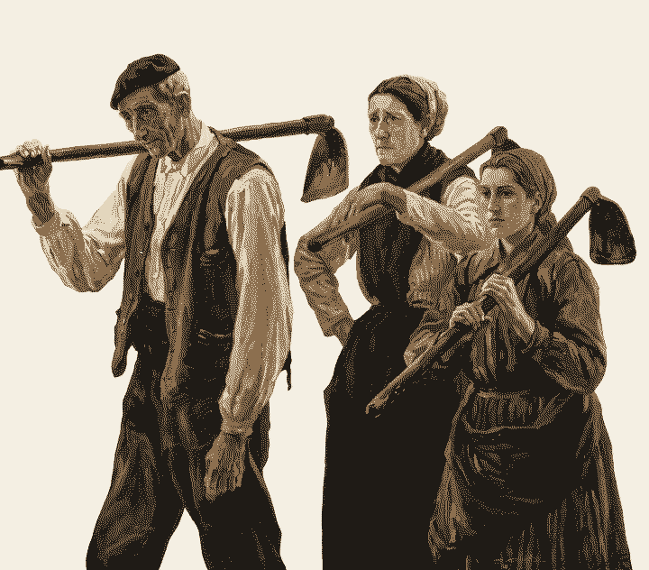
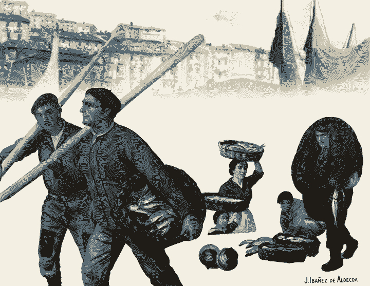
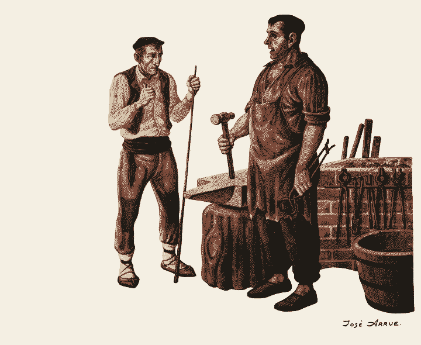
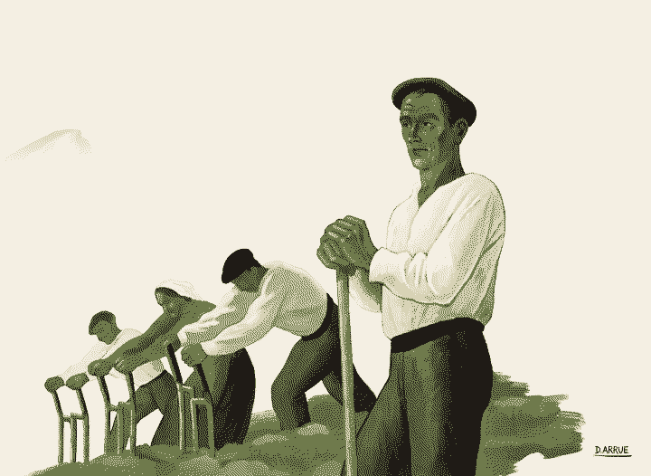

Essay — No. 14 —
How to dither a painting, and why it uses less energy

Every image on this page has been reduced to four colours. It is a deliberate choice: a dithered image is a fraction of the size of the original, and it carries its own kind of beauty, the beauty of an old newspaper, an early Macintosh, an etching.
Dithering trades colour for pattern. Where the original painting has a thousand shades of ochre, the dithered version has two or three, arranged so closely that the eye mixes them back together. The error that each pixel makes when it is rounded to the nearest available colour is not discarded: it is passed on to its neighbours, seven sixteenths to the right, five sixteenths below.
The fishermen of the harbour
We began with the port. The painting is full of fine detail, rigging, faces, baskets of fish, and it is exactly the kind of image that a naive reduction destroys. Error diffusion keeps the edges of the oars and the folds in the jacket, because it never lets a local mistake accumulate.

“A website that goes off-line when the sun doesn’t shine.” We borrowed the spirit, not the panel: Dither runs entirely in your browser, so the only energy it spends is your own.


What the numbers say
| Image | Original | Dithered | Saved |
|---|---|---|---|
| Campesinos | 114 KB | 29 KB | 75% |
| Puerto | 134 KB | 32 KB | 76% |
| Herrero | 80 KB | 22 KB | 72% |
| Labradores | 51 KB | 17 KB | 67% |
Four colours is not a hard rule. The fish market below uses a warmer palette with a single red, because the painting is about the catch, and the catch is red.

Try it on your own images
Open the studio, drop an image, and choose Error diffusion → Floyd–Steinberg. Set the palette to four colours. Export as PNG; it will be smaller than you expect. Open Dither →
Colophon. Set in your system serif. No web fonts, no tracking, no cookies. Images dithered with Dither. Basque fishing and rural paintings from the Dither sample collection.
Previous: Ordered dithering and the Bayer matrix
Next: ASCII as a compression format